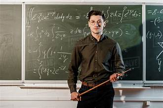

macalimiinta iskuulka
profile: Asad ahmed
Asad ahmed waa macallin ku takhasusay cilmiga kombiyuutarka iyo tiknoolajiyadda casriga ah. Waxay leedaha 7 sano oo waayo-aragnimo ah oo ay ku baraysay ardayda xirfadaha kombiyuutarka iyo barnaamijyada kala duwan. Waxay casharro ka bixisaa Computer Fundamentals, Web Development, Programming Languages, Database Systems, iyo Digital Literacy.
Amina waxay si weyn u aaminsan tahay in xirfadaha tiknoolajiyaddu ay yihiin kuwa ugu muhiimsan qarnigan. Waxay ardayda ku dhiirrigelisaa inay bartaan coding, xalinta dhibaatooyinka, iyo hal-abuurka dhijitaalka ah. Arday badan oo ay wax bartay ayaa noqday horumariyeyaal software, naqshadeeyayaal web, iyo xirfadlayaal IT ah. Hadafkeedu waa inay ardayda u diyaariso fursadaha shaqo ee mustaqbalka iyo dunida tiknoolajiyadda ee sii kobcaysa.
profile: Mohamed nor
 Mohamed Nur waa macallin saynis oo leh 8 sano oo waayo-aragnimo ah. Wuxuu ku takhasusay Biology, Chemistry, iyo Physics. Intii uu waxbaridda ku jiray, wuxuu ku dadaalay inuu ardayda ku abuuro xiise ay u qabaan cilmiga iyo baaritaanka.
Wuxuu adeegsadaa tijaabooyin iyo tusaalooyin nolosha dhabta ah si uu mawduucyada sayniska uga dhigo kuwo sahlan oo la fahmi karo. Mohamed wuxuu sidoo kale ka shaqeeyaa kobcinta xirfadaha cilmi-baarista, falanqaynta xogta, iyo fikirka hal-abuurka leh. Wuxuu aaminsan yahay in saynisku yahay saldhigga horumarka bulshada iyo tiknoolajiyadda.
Mohamed Nur waa macallin saynis oo leh 8 sano oo waayo-aragnimo ah. Wuxuu ku takhasusay Biology, Chemistry, iyo Physics. Intii uu waxbaridda ku jiray, wuxuu ku dadaalay inuu ardayda ku abuuro xiise ay u qabaan cilmiga iyo baaritaanka.
Wuxuu adeegsadaa tijaabooyin iyo tusaalooyin nolosha dhabta ah si uu mawduucyada sayniska uga dhigo kuwo sahlan oo la fahmi karo. Mohamed wuxuu sidoo kale ka shaqeeyaa kobcinta xirfadaha cilmi-baarista, falanqaynta xogta, iyo fikirka hal-abuurka leh. Wuxuu aaminsan yahay in saynisku yahay saldhigga horumarka bulshada iyo tiknoolajiyadda.
profile: Macalin yuusuf

Yusuf Ahmed waa macallin ku takhasusay cilmiga kombiyuutarka iyo tiknoolajiyadda. Wuxuu leeyahay 7 sano oo waayo-aragnimo ah oo ku saabsan baridda Programming, Web Development, Database Systems, iyo Computer Applications. Yusuf wuxuu ardayda baraa xirfadaha lagama maarmaanka u ah dunida casriga ah, isaga oo ku dhiirrigeliya hal-abuurka iyo xalinta dhibaatooyinka. Wuxuu aaminsan yahay in tiknoolajiyaddu tahay aalad muhiim ah oo lagu gaaro horumar iyo guul mustaqbalka.
Qoraalladan waxay ku habboon yihiin qaybta "Our Teachers" ee website-kaaga, waxaana macallin kasta hoostiisa lagu dari karaa sawirkiisa, magaciisa, khibraddiisa, iyo sharaxaaddan dheer.
profile: Ahmed Hassan
Ahmed Hassan waa macallin sare oo ku takhasusay maadada xisaabta, isagoo leh in ka badan 12 sano oo waayo-aragnimo ah. Intii uu ku jiray xirfaddiisa waxbarasho, wuxuu soo saaray arday badan oo guulo ka gaaray imtixaannada qaranka iyo kuwa caalamiga ah. Wuxuu si gaar ah ugu xeel dheer yahay Algebra, Geometry, Trigonometry, iyo Statistics.
Ahmed wuxuu adeegsadaa habab waxbarasho oo casri ah oo ardayda ka caawiya inay fahmaan mawduucyada adag si fudud. Wuxuu rumeysan yahay in arday kasta uu leeyahay awood uu ku fahmi karo xisaabta haddii loo helo hagitaan sax ah iyo dhiirrigelin joogto ah. Marka laga soo tago waxbaridda, wuxuu sidoo kale ka qayb qaataa diyaarinta manhajyada waxbarashada iyo tababarka macallimiinta cusub. Ujeeddadiisu waa inuu dhiso jiil leh xirfado xallinta dhibaatooyinka iyo fikirka falanqaynta.